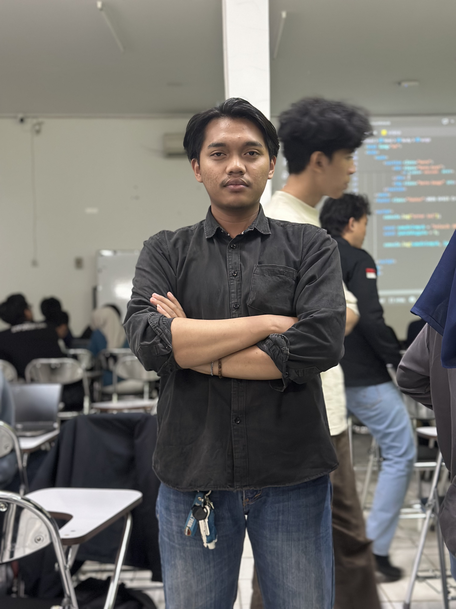

Kelompok 8
sekumpulan mahasiswa yang berdedikasi menghadirkan inovasi di bidang teknologi . Melalui proyek Kelasik 1.0.Cek Kelompok kami YU!!
Tentang Kami

Moch. MahardikaKenalin, ini Mahardika, mentor yang udah ngebantu gua growth sejauh ini. Dengan background-nya yang kuat di Fullstack Developer, dia tahu persis apa yang dibutuhin sama talent zaman sekarang buat bisa bersaing. Highly recommended mentor!
 Alnov Bayhaqi
Alnov Bayhaqi
Di balik kelancaran jalannya project dan solidnya tim ini, ada Alnov yang berdiri sebagai ketua kelompok. Dia punya kemampuan luar biasa dalam memetakan potensi tiap anggota, mengomunikasikan visi, dan mengambil keputusan krusial di saat-saat penting